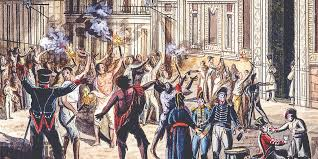
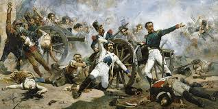

|  |
 |
|---|
Durante el siglo XVIII, la Nueva España se había consolidado como el territorio más rico y estratégico del Imperio Español, pero esta riqueza trajo consigo profundas divisiones sociales y políticas. Las Reformas Borbónicas, impulsadas por la corona para modernizar el Estado y aumentar su control, tuvieron efectos colaterales conflictivos. Se restringió el comercio a puertos específicos, se crearon intendencias para centralizar la administración y, lo más delicado, se limitó el acceso a los altos cargos públicos a los españoles nacidos en la península, marginando a los criollos. A pesar de que muchos criollos eran dueños de grandes haciendas y minas, y poseían una educación sólida, se sentían discriminados políticamente. Paralelamente, las ideas de la Ilustración que cuestionaban el derecho divino de los reyes y promovían la soberanía popular junto con el éxito de la Independencia de Estados Unidos y los ideales de la Revolución Francesa, circulaban de forma clandestina en tertulias y bibliotecas, creando un ambiente intelectual que ya no aceptaba el orden colonial de manera incondicional.
El equilibrio político se rompió drásticamente en 1808 cuando Napoleón Bonaparte, aprovechando conflictos internos en la familia real española y la debilidad del gobierno, ordenó la invasión de la Península Ibérica. Bajo engaños y presión militar, el rey Carlos IV y su hijo, el príncipe heredero Fernando VII, fueron obligados a abdicar en Bayona. Napoleón aprovechó la vacante para entregar el trono a su hermano, José Bonaparte. Este hecho, conocido como las Abdicaciones de Bayona, creó una crisis de legitimidad sin precedentes. En España, la población se levantó en armas contra el invasor y se formaron Juntas de Defensa que afirmaban gobernar en nombre del rey cautivo. La Junta Suprema Central se estableció como la máxima autoridad, pero para los habitantes de la Nueva España, la pregunta era compleja: si el rey legítimo no gobernaba y un usurpador ocupaba el trono, ¿la autoridad de España seguía siendo válida o, según el principio jurídico de reino vacante, la soberanía regresaba al pueblo hasta que el monarca fuera restituido?
Al llegar las noticias a la Ciudad de México, el virrey José de Iturrigaray se encontró ante un dilema. Iturrigaray, un hombre de carácter pragmático y quizás con aspiraciones de mayor poder, percibió que la situación en España era caótica. Convocó a un Cabildo Abierto el 1 de septiembre de 1808, una reunión extraordinaria que incluía a representantes de la iglesia, el ejército, la universidad y el comercio. En este foro, los representantes criollos, como el licenciado Francisco Primo de Verdad y Ramos y el corregidor Miguel Domínguez, argumentaron que, al no haber rey legítimo, la soberanía residía en la nación y, por tanto, la Nueva España tenía derecho a formar su propia junta autónoma, leal a Fernando VII pero independiente de la Junta de España. Esta postura fue ferozmente rechazada por los españoles peninsulares, liderados por el poderoso comerciante Gabriel de Yermo, quienes veían en ello una amenaza a sus privilegios y al orden colonial. El conflicto escaló hasta que, en la madrugada del 16 de septiembre, un grupo de militares y partidarios de Yermo asaltó el Palacio Virreinal, arrestó a Iturrigaray y a los principales líderes criollos, imponiendo un nuevo virrey, Pedro de Garibay, bajo su control.
El golpe de Estado de Yermo no resolvió la crisis, sino que la profundizó al romper el consenso político que había mantenido unido al virreinato. La acción violenta demostró a los criollos que la vía pacífica y legal para obtener mayor autonomía estaba cerrada y que los peninsulares estaban dispuestos a usar la fuerza para mantener su hegemonía. La detención y el encarcelamiento de figuras clave como Primo de Verdad quien murió en prisión poco después, bajo sospechas de envenenamientoy José Mariano Michelena eliminaron al sector más moderado y reformista, que abogaba por una autonomía dentro del imperio. Al cerrarse esa puerta, el descontento comenzó a canalizarse hacia posturas más radicales. Además, la imagen de autoridad de la corona quedó manchada; si el virrey podía ser depuesto por un grupo de comerciantes, la invulnerabilidad del poder colonial se había revelado como una ilusión, sembrando la duda y la desconfianza en todos los estratos de la sociedad.
La crisis de 1808 se convirtió en el verdadero prólogo de la Independencia de México, ya que transformó una disputa política en un conflicto de identidad y poder. Lo que inició como un debate sobre a quién obedecer evolucionó hacia la cuestión de si era necesario seguir perteneciendo a España. Aunque el gobierno impuesto por Yermo logró mantener el control durante dos años más, la semilla de la rebelión ya estaba plantada. Las ideas de soberanía y autonomía que se discutieron en el Cabildo Abierto no desaparecieron, sino que se difundieron hacia sectores más amplios de la población, incluyendo a los indígenas y mestizos que sufrían las cargas económicas de las reformas y la opresión social. Este ambiente de efervescencia fue el terreno fértil en el que germinó el movimiento armado que estalló el 16 de septiembre de 1810, liderado por el cura Miguel Hidalgo, quien retomó la bandera de la defensa de Fernando VII como un disfraz inicial, pero que rápidamente reveló que el objetivo real era la libertad y la ruptura definitiva con el dominio español.